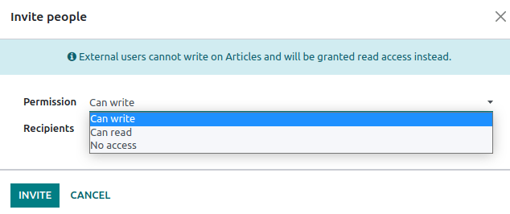

Articles management¶
Managing articles effectively is key to maximizing the value of your knowledge resources, whether working on a research project, studying for an exam, or building a knowledge database for your business. Knowledge allows you to fully manage your articles, from creation to removal, through sharing and structure.
You can find most tools to manage articles by clicking the vertical ellipsis button (⋮) at the right side of the top bar. From there, you can move, lock, delete, or duplicate an article.

Creation, sharing, and removal of articles¶
Creation¶
To create articles, click the + New button on the right side of the top bar or the + button next to a category or another article.
Tip
Create private articles quickly with the Alt/Option + C keyboard shortcut.
Invite users¶
To share articles with specific users (internal or external, such as a partner or a customer), click Invite. This opens a pop-up window in which you can choose the Permission (i.e, access rights) and enter the Recipients’ name or email.
You can also restrict a specific user from accessing the article by selecting No access permission.
Removal¶
To remove an article, you can either delete it or archive it.
To delete an article, open it and click the vertical ellipsis button . The article is moved to the trash for 30 days before being permanently deleted. To restore it, click Open the Trash, select the article, and click Restore.
To archive articles, click Search, select the article(s), and click . Archived articles are hidden from the search menu. To retrieve an archived article, add a custom filter to display them (, and set Active as is No). Then, select the article(s) and go to .
Structure of articles¶
Articles are organized into a hierarchical structure wherein the article on top is a parent article, and those underneath are called nested articles. This structure allows the grouping of related articles.
To establish this hierarchy, create new articles by clicking the + button next to the parent-to-be article, or move existing articles by either dragging and dropping them under the parent-to-be or by clicking the vertical ellipsis button (⋮), clicking Move To on the toolbox and selecting the article to use as a parent.
Categories¶
Additionally, articles are divided into four categories that can be found on the left sidebar. These categories give articles default access rights.
Favorites: You can set any article you can access as a favorite. To do so, click the star-shaped icon (★) in the top-right menu of articles. Marking articles as favorites is user-specific and does not affect other users.
Workspace: Articles displayed in that category are available to all internal users. These users have the right to read, modify or share these articles.
Shared: Articles displayed in that category are those you shared with internal users, external users, or shared with you.
Private: Articles displayed in that category are only available to you.